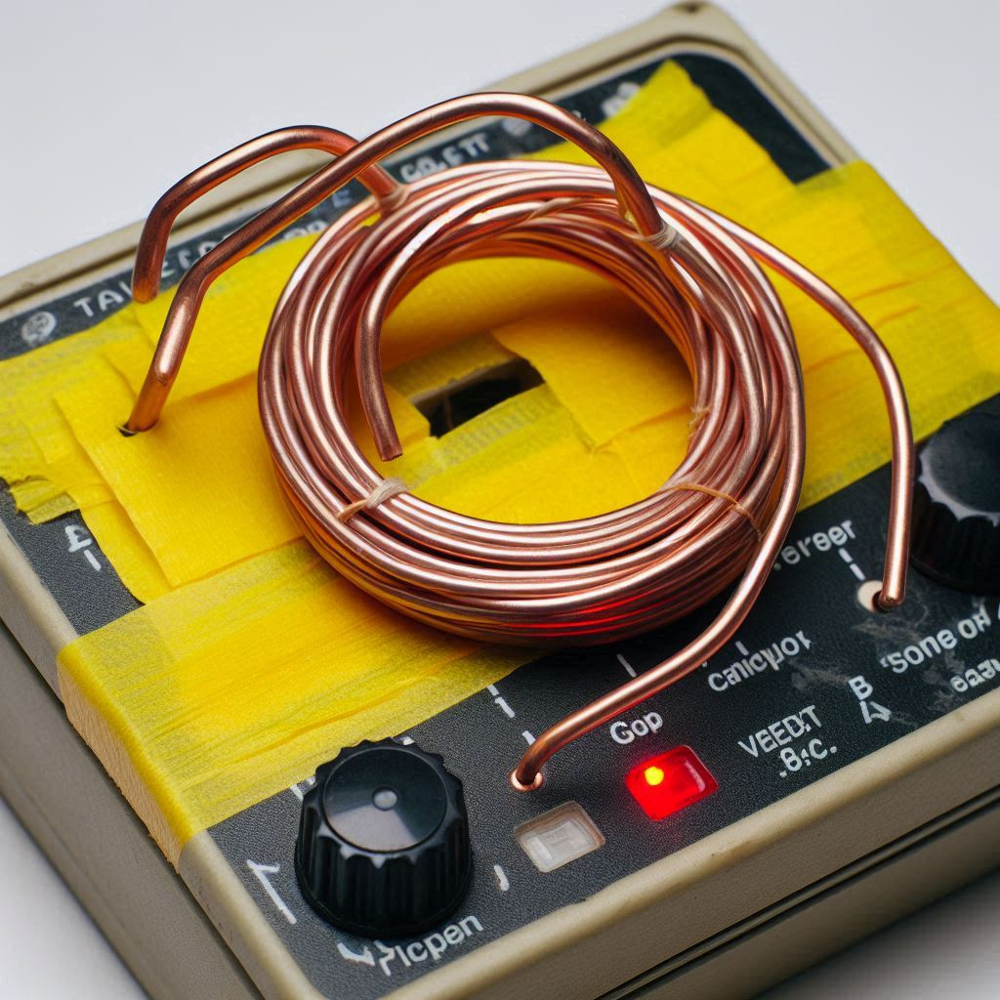
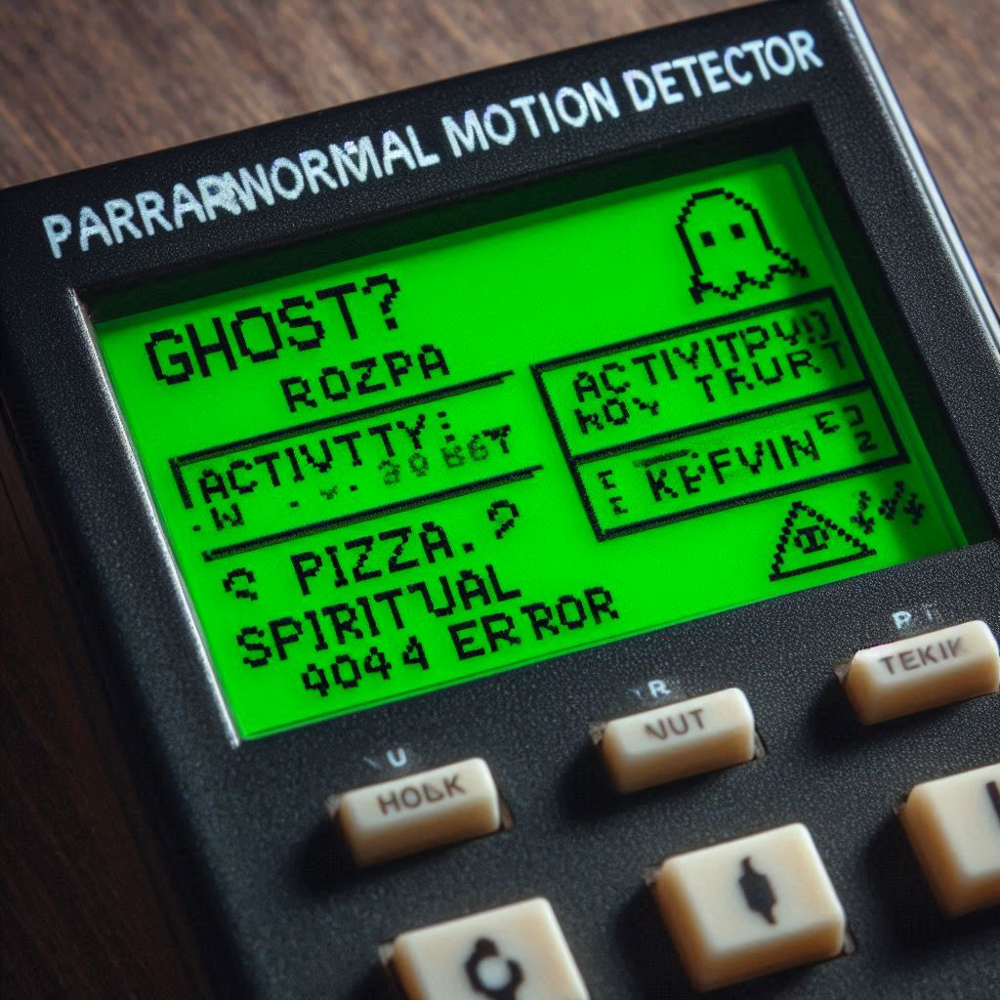
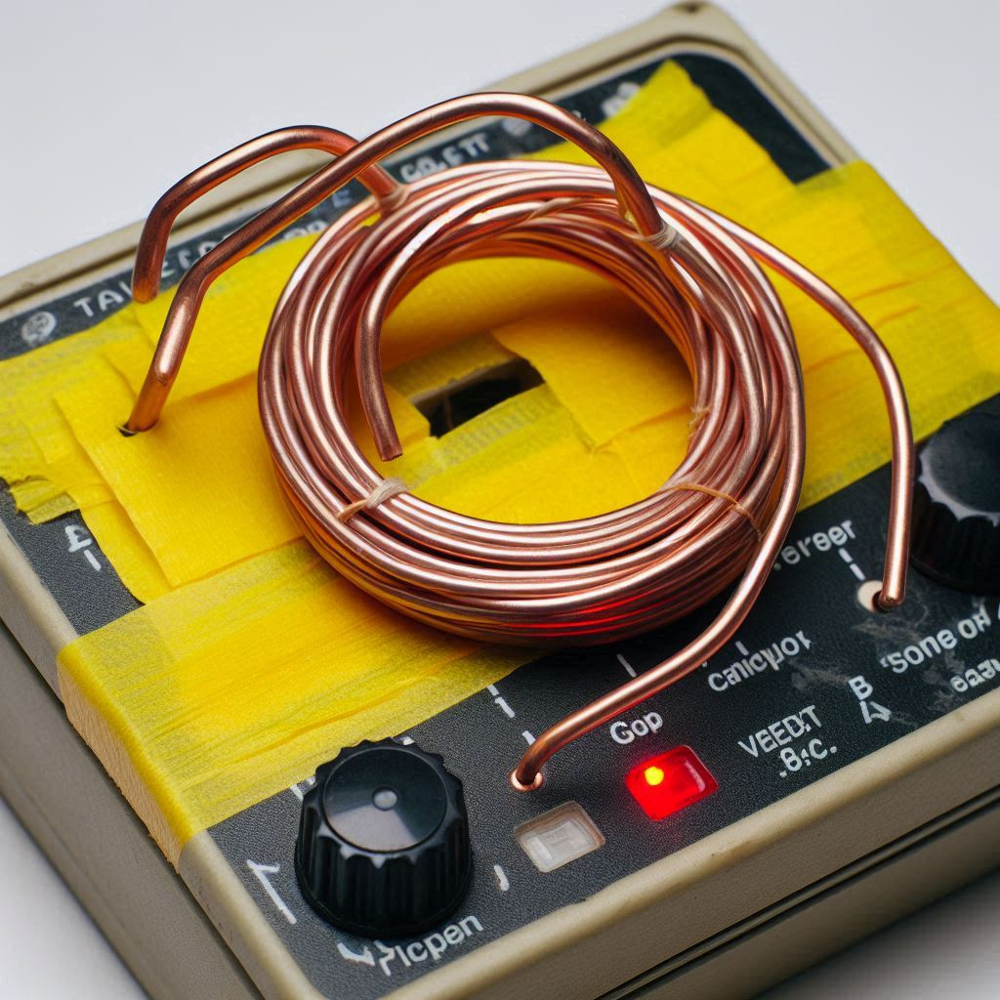
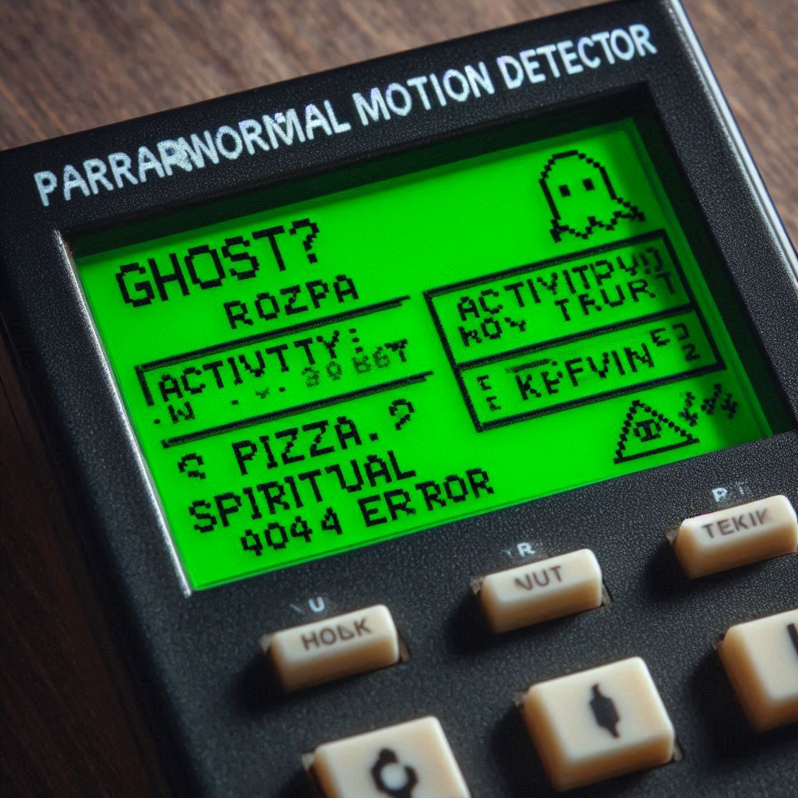

Indicateur d'Activité Paranormale :
Détecteur de Mouvement "Paranormal"
Stock (très) limité (on en a fabriqué 3, et Kevin en a déjà cassé un en essayant de contacter son ancêtre viking)
Votre maison grince ? Des objets bougent tout seuls ? Ou c'est juste le vent ? Avec le Détecteur "Paranormal", vous ne saurez toujours pas, mais au moins, vous aurez un gadget qui clignote !
- Détection : Mouvements, courants d'air, poussière qui tombe, pensées négatives de Kevin, fantômes (non garanti, surtout s'ils sont timides).
- Sensibilité : Réglable de "Détecte un éléphant dans un couloir" à "Détecte le battement d'ailes d'un moustique à 3km (en théorie)".
- Affichage : Écran LCD cryptique affichant des "niveaux d'énergie ectoplasmique" (en fait, c'est la charge de la batterie).
- Antenne : "Haute sensibilité", fabriquée avec un cintre et beaucoup d'optimisme. Peut capter des radios pirates ou les pensées du voisin.
- Alertes : Bips sonores angoissants, lumières clignotantes aléatoires, et parfois une légère odeur de soufre (ou c'est juste le plastique qui chauffe).
- Mode "Chasse aux Fantômes" : Active toutes les lumières et tous les sons en même temps. Effrayant pour vous, hilarant pour les fantômes.
- Compatibilité Ouija : Non testée, mais on vous encourage à essayer et à nous raconter.
- Alimentation : Une pile 9V (non fournie) qui dure environ 15 minutes en mode "Chasse aux Fantômes".
Livraison : Parfois, le colis arrive avant même que vous ne l'ayez commandé (si un fantôme facteur est dans le coin). Sinon, délais habituels de SécuriPLUS+.
Retours : Si le détecteur est possédé par un esprit malveillant, nous ne le reprenons PAS. Vous devrez gérer ça vous-même. Pour les autres retours, voir nos conditions (écrites en runes anciennes).
Le Détecteur de Mouvement "Paranormal" : Votre allié contre l'invisible (ou l'imaginaire) !
Vous sentez une présence ? Des frissons inexpliqués ? Ne cherchez plus (ou continuez à chercher, mais avec notre détecteur) ! Le Détecteur de Mouvement "Paranormal" de SécuriPLUS+ est l'outil indispensable pour tous ceux qui se posent des questions sur ce qui se cache dans l'ombre.
Grâce à sa technologie de "Détection Spectrale Avancée" (un nom inventé par Kevin pour faire pro), cet appareil prétend capter les moindres fluctuations énergétiques. En réalité, il réagit surtout aux changements de température, aux vibrations du plancher quand le chat saute, et aux ondes émises par votre micro-ondes. Mais CHUT, c'est un secret !
Utilisations recommandées (par notre équipe de parapsychologues amateurs) :
- Animer vos soirées pyjama en faisant croire à vos amis qu'un fantôme est présent.
- Trouver une excuse pour ne pas faire le ménage ("Désolé, le détecteur dit qu'il y a une entité dans le placard à balais").
- Décorer votre bureau avec un objet qui clignote de manière aléatoire.
- Tenter de communiquer avec votre grille-pain (on ne sait jamais).
Note de Kevin : Une fois, le détecteur s'est affolé devant la machine à café. Je pense qu'elle est vraiment possédée. Ce manuel est notre seul espoir.
Ce qu'en pensent les esprits... et les autres :
"Il a détecté ma belle-mère !" - Par ChasseurDeFantomesDuDimanche, le 02 Mai 2024
"Incroyable ! Dès que ma belle-mère est entrée dans la pièce, l'appareil s'est mis à clignoter frénétiquement et à biper comme un fou. Coïncidence ? Je ne crois pas ! Bon, il fait pareil quand le chat passe, mais c'est moins drôle."
"Mon grille-pain est hanté, apparemment." - Par AmateurDeToastAnxieux, le 05 Mai 2024
"J'ai placé le détecteur à côté de mon grille-pain, et il n'arrête pas de s'activer. Soit mon grille-pain est un portail vers l'au-delà, soit ce détecteur est un peu trop sensible aux appareils électroménagers. Je penche pour la deuxième option. Kevin du SAV m'a dit que c'était 'une fonctionnalité'."